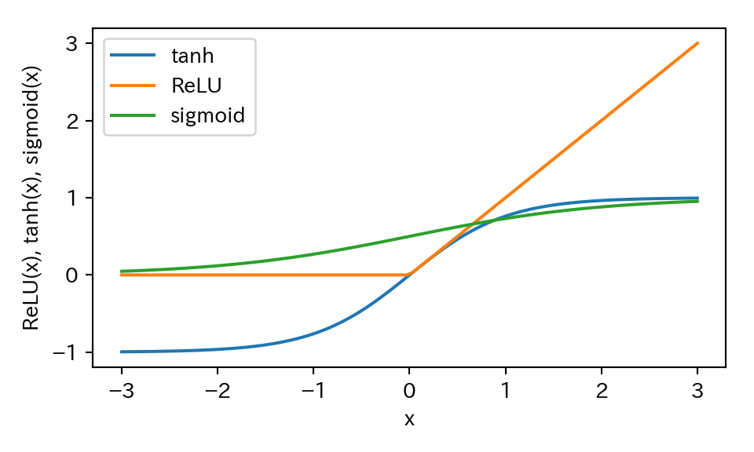
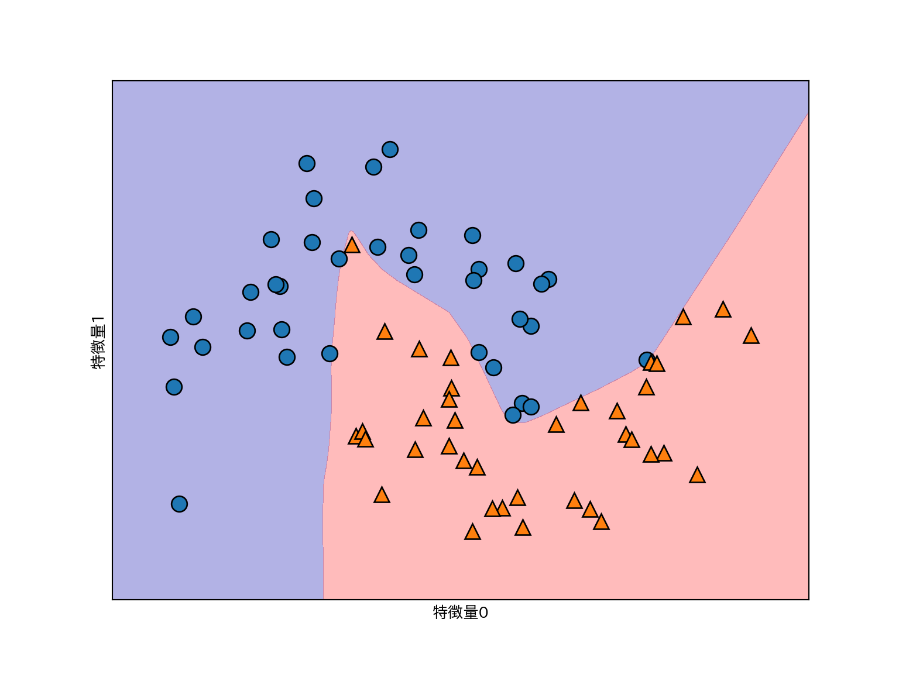
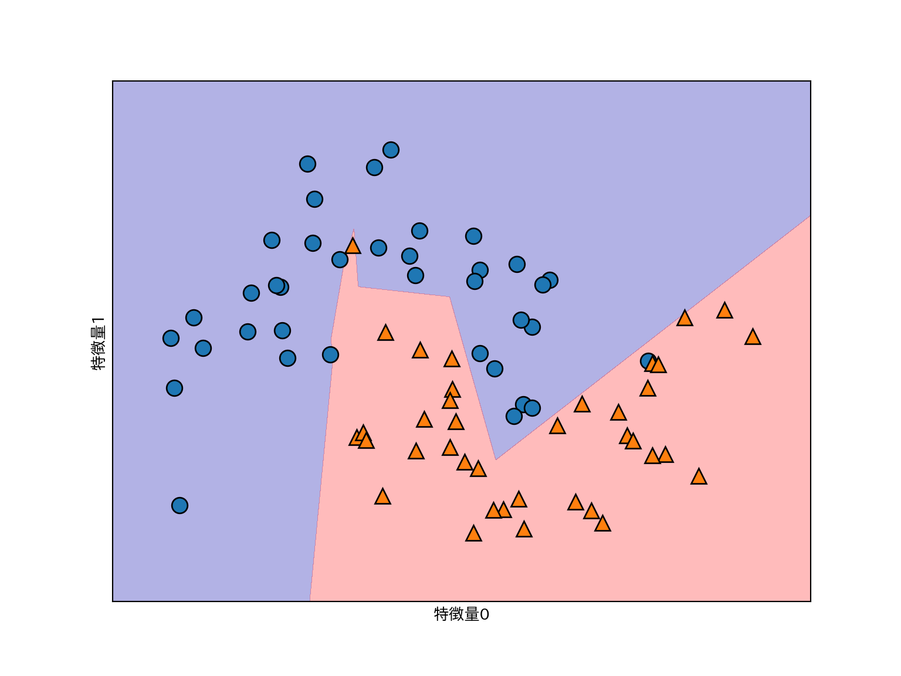
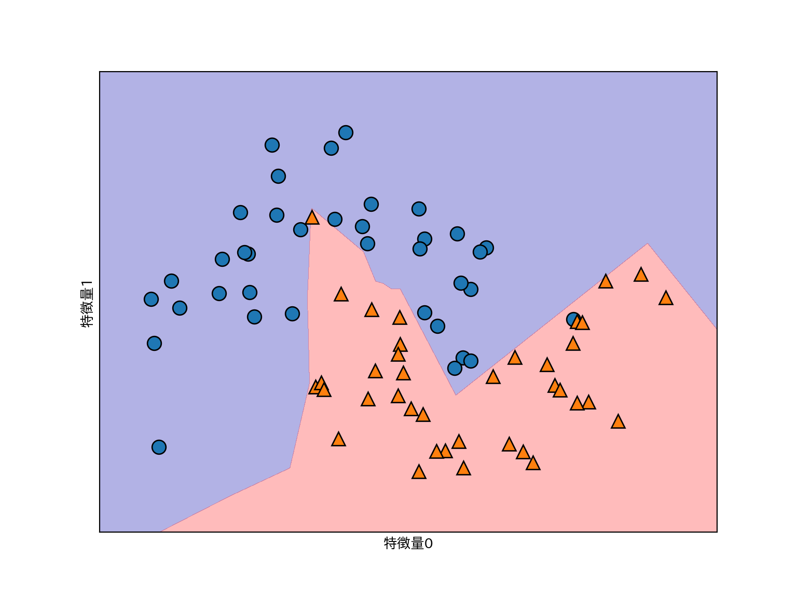
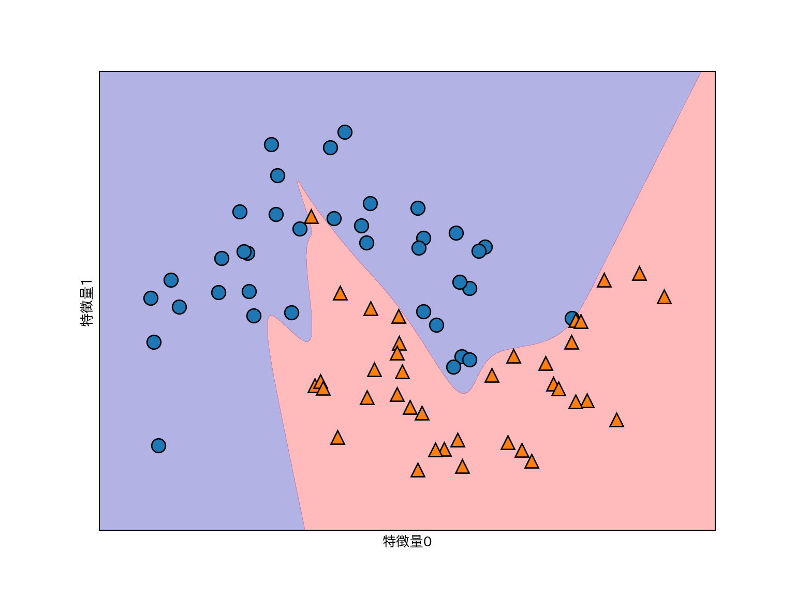
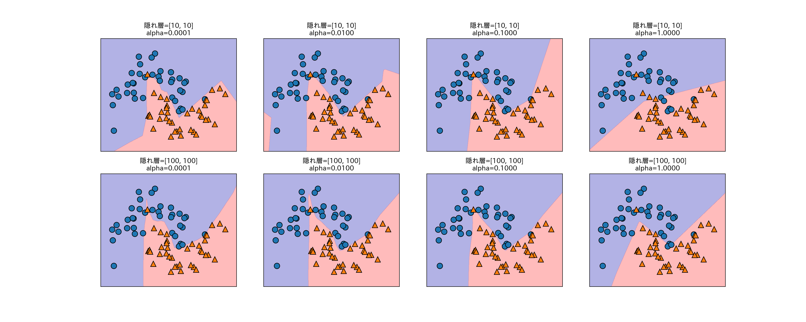
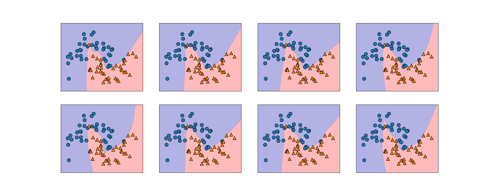
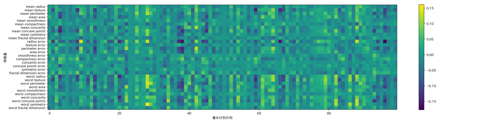

max(0, x)line = np.linspace(-3, 3, 100)
plt.figure(figsize=(5, 3))
plt.plot(line, np.tanh(line), label = "tanh")
plt.plot(line, np.maximum(line, 0), label = "ReLU")
plt.plot(line, 1.0 / (1.0 + np.exp(-line)), label = "sigmoid")
plt.legend(loc = "best")
plt.xlabel("x")
plt.ylabel("ReLU(x), tanh(x), sigmoid(x)")
two_moonsデータセットを用いて試してみる。from sklearn.model_selection import train_test_split
from sklearn.neural_network import MLPClassifier
from sklearn.datasets import make_moons
X, y = make_moons(n_samples=100, noise=.25, random_state=3)
X_train, X_test, y_train, y_test = train_test_split(
X, y, stratify=y, random_state=42
)
mlp = MLPClassifier(solver='lbfgs', random_state=0).fit(X_train, y_train)
mglearn.plots.plot_2d_separator(mlp, X_train, fill=True, alpha=.3)
mglearn.discrete_scatter(X_train[:, 0], X_train[:, 1], y_train)
plt.xlabel("特徴量0")
plt.ylabel("特徴量1")
mlp = MLPClassifier(solver='lbfgs', random_state=0, hidden_layer_sizes=[10])
mlp.fit(X_train, y_train)
mglearn.plots.plot_2d_separator(mlp, X_train, fill=True, alpha=.3)
mglearn.discrete_scatter(X_train[:, 0], X_train[:, 1], y_train)
plt.xlabel("特徴量0")
plt.ylabel("特徴量1")
# 10ユニットの隠れ層を2つ使う
mlp = MLPClassifier(solver='lbfgs', random_state=0, hidden_layer_sizes=[10, 10])
mlp.fit(X_train, y_train)
mglearn.plots.plot_2d_separator(mlp, X_train, fill=True, alpha=.3)
mglearn.discrete_scatter(X_train[:, 0], X_train[:, 1], y_train)
plt.xlabel("特徴量0")
plt.ylabel("特徴量1")
# 10ユニットの隠れ層を2つ使う+活性化関数にtanh
mlp = MLPClassifier(solver='lbfgs', activation='tanh',
random_state=0, hidden_layer_sizes=[10, 10])
mlp.fit(X_train, y_train)
mglearn.plots.plot_2d_separator(mlp, X_train, fill=True, alpha=.3)
mglearn.discrete_scatter(X_train[:, 0], X_train[:, 1], y_train)
plt.xlabel("特徴量0")
plt.ylabel("特徴量1")
fig, axes = plt.subplots(2, 4, figsize=(20, 8))
for axx, n_hidden_nodes in zip(axes, [10, 100]):
for ax, alpha in zip(axx, [0.0001, 0.01, 0.1, 1]):
mlp = MLPClassifier(solver='lbfgs', random_state=0,
hidden_layer_sizes=[n_hidden_nodes, n_hidden_nodes],
alpha=alpha)
mlp.fit(X_train, y_train)
mglearn.plots.plot_2d_separator(mlp, X_train, fill=True, alpha=.3, ax=ax)
mglearn.discrete_scatter(X_train[:, 0], X_train[:, 1], y_train ,ax=ax)
ax.set_title("隠れ層=[{}, {}]\nalpha={:.4f}".format(
n_hidden_nodes, n_hidden_nodes, alpha))
fig, axes = plt.subplots(2, 4, figsize=(20, 8))
for i, ax in enumerate(axes.ravel()):
mlp = MLPClassifier(solver='lbfgs', random_state=i,
hidden_layer_sizes=[100, 100])
mlp.fit(X_train, y_train)
mglearn.plots.plot_2d_separator(mlp, X_train, fill=True, alpha=.3, ax=ax)
mglearn.discrete_scatter(X_train[:, 0], X_train[:, 1], y_train, ax=ax)
from sklearn.datasets import load_breast_cancer
cancer = load_breast_cancer()
print(cancer.data.max(axis=0)) # 各データセットの最大値
## [2.811e+01 3.928e+01 1.885e+02 2.501e+03 1.634e-01 3.454e-01 4.268e-01
## 2.012e-01 3.040e-01 9.744e-02 2.873e+00 4.885e+00 2.198e+01 5.422e+02
## 3.113e-02 1.354e-01 3.960e-01 5.279e-02 7.895e-02 2.984e-02 3.604e+01
## 4.954e+01 2.512e+02 4.254e+03 2.226e-01 1.058e+00 1.252e+00 2.910e-01
## 6.638e-01 2.075e-01]X_train, X_test, y_train, y_test = train_test_split(
cancer.data, cancer.target, random_state=0
)
mlp = MLPClassifier(random_state=42)
mlp.fit(X_train, y_train)
print("訓練セットの精度: {:.2f}".format(mlp.score(X_train, y_train)))
## 訓練セットの精度: 0.91
print("テストセットの精度: {:.2f}".format(mlp.score(X_test, y_test)))
## テストセットの精度: 0.88mean_on_train = X_train.mean(axis=0) # 各データセットの平均値
std_on_train = X_train.std(axis=0) # 各データセットの標準偏差
# 平均を引いてスケーリングする
X_train_scaled = (X_train - mean_on_train) / std_on_train
X_test_scaled = (X_test - mean_on_train) / std_on_train
# MLPを適用
mlp = MLPClassifier(random_state=0)
mlp.fit(X_train_scaled, y_train)
## /Users/rito/myenv/lib/python3.6/site-packages/sklearn/neural_network/multilayer_perceptron.py:564: ConvergenceWarning: Stochastic Optimizer: Maximum iterations (200) reached and the optimization hasn't converged yet.
## % self.max_iter, ConvergenceWarning)
print("訓練セットの精度: {:.3f}".format(mlp.score(X_train_scaled, y_train)))
## 訓練セットの精度: 0.991
print("テストセットの精度: {:.3f}".format(mlp.score(X_test_scaled, y_test)))
## テストセットの精度: 0.965mlp = MLPClassifier(max_iter=1000, random_state=0)
mlp.fit(X_train_scaled, y_train)
print("訓練セットの精度: {:.3f}".format(mlp.score(X_train_scaled, y_train)))
## 訓練セットの精度: 0.993
print("テストセットの精度: {:.3f}".format(mlp.score(X_test_scaled, y_test)))
## テストセットの精度: 0.972mlp = MLPClassifier(max_iter=1000, alpha=1, random_state=0)
mlp.fit(X_train_scaled, y_train)
print("訓練セットの精度: {:.3f}".format(mlp.score(X_train_scaled, y_train)))
## 訓練セットの精度: 0.988
print("テストセットの精度: {:.3f}".format(mlp.score(X_test_scaled, y_test)))
## テストセットの精度: 0.972plt.figure(figsize=(20, 5))
plt.imshow(mlp.coefs_[0], interpolation='none', cmap='viridis')
plt.yticks(range(30), cancer.feature_names)
plt.xlabel("重み行列の列")
plt.ylabel("特徴量")
plt.colorbar()
adamかlbfgsを使っておこう。fit呼び出しの度に重みはリセットされる。MLPClassifier呼び出し時にwarm_start=Trueを指定すると前回の学習を引き継げるようになる。